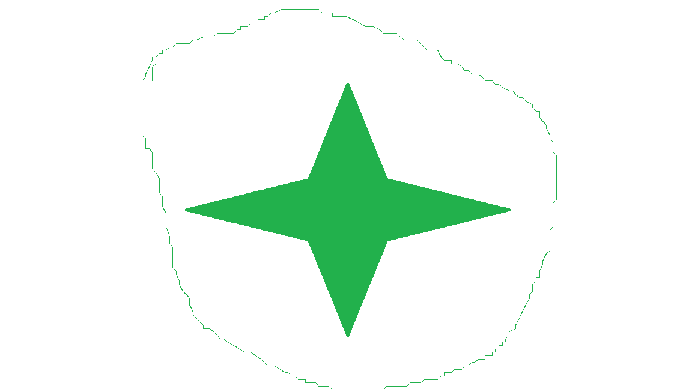

Kasutusjuhend
1. Kasuta nuppe "--->" ja "<---" plokkide liigutamiseks.
2. Kasuta nuppe "Peida" ja "Kuva" esimese kasti peitmiseks või näitamiseks.
3. Vajuta nuppu "Slide efekt", et teine kast rulluks kokku või lahti (uus efekt).
4. Lohista hiirega kasti või pilti, et näha koordinaate.
Tere tulemast!
See on veebirakenduste aluste kursuse raames loodud koduleht.
Siit lehelt leiad teavet minu õppetööde, kasulike materjalide ja meediafailide kohta.
Info lehe kohta
Leht on struktureeritud HTML5 standardite kohaselt ning kujundatud isikupärase CSS-stiililehe abil.
